; its conserved density
; its conserved density Derivation
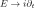
,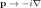
in (Klein 1926):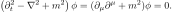
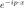
with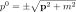
: both signs. Current: multiply by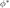
, subtract the conjugate: with
with 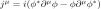
(Gordon 1926). For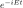
,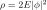
: negative for . Interpreted as a charge density (
. Interpreted as a charge density (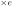
), negative-energy solutions describe antiparticles of opposite charge (Pauli–Weisskopf).Coupling and non-relativistic limit
Minimal coupling
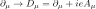
. Writing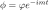
and neglecting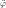
gives back the Schrödinger equation with rest energy removed.Worked example
Pionic atom (π⁻ bound to a nucleus  ): the KG Coulomb problem gives
): the KG Coulomb problem gives
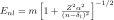
, . Expanding: Bohr levels plus a relativistic correction that depends on differently from the Dirac result — measured X-rays from pionic atoms confirm KG for spin 0.
differently from the Dirac result — measured X-rays from pionic atoms confirm KG for spin 0.
Engineering applications
Scalar fields model pions and the Higgs; the KG equation with an imaginary mass describes evanescent fields, and
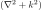
form equations of the same family govern waveguide modes (the transverse Helmholtz equation in waveguides is a KG equation with cutoff playing the role of mass).Pitfall
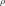
is not a probability density; trying to keep a one-particle interpretation leads to the Klein paradox. The resolution is field theory with particles and antiparticles.